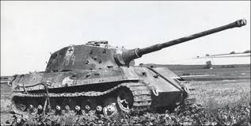
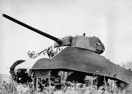
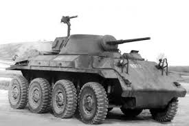
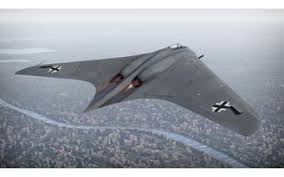
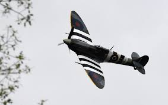
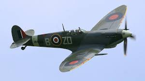
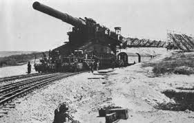
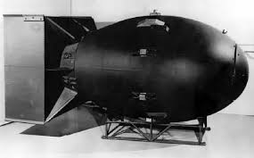
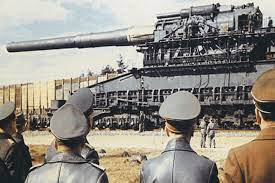

BLINDADOS



Um carro de combate (conhecido popularmente como tanque de guerra) é um sistema de armas que reúne em si, sob determinada prioridade sistémica, as 5 acções essenciais ao combate: Poder de fogo, Ação de Choque, Protecção, Mobilidade, e Informações e Comunicações.[1]
Possui com elemento do subsistema mobilidade, a esteira (lagarta) através do qual se desloca. Como armamento principal, possui uma peça de elevado calibre, como um canhão. Em inglês designa-se por Main Battle Tank (MBT). O termo "tanque" (ou no original em inglês, "tank") surgiu como um código criado por seus inventores, os ingleses, para disfarçar o projeto do primeiro carro de combate de seus inimigos à época, os alemães.
É um veículo de combate blindado utilizado geralmente pela cavalaria de um exército, projetado principalmente para atacar forças inimigas com a utilização de fogo direto. Um carro de combate é caracterizado pelo seu armamento pesado e pela sua blindagem também pesada, tal como o seu grau de mobilidade que o permite atravessar terreno difícil a grandes velocidades. Embora os carros de combate sejam caros de operar e exigentes na vertente logística, são, ainda o elemento mais eficaz e letal na guerra de assalto terrestre e continuará a sê-lo num futuro próximo. Estão entre as armas de combate modernas mais formidáveis e versáteis, tanto pelo fato da sua habilidade para atacar contra alvos terrestres, tanto como o seu valor de choque contra a infantaria convencional.
AVIÕES



Você sabe o papel do avião na segunda guerra mundial? Em A Guerra Aérea, David Baker conta a fascinante história de como as potências Aliadas e do Eixo desenvolveram a ideia de guerra aérea antes e durante a Segunda Guerra Mundial. De uso muito limitado na Primeira Guerra Mundial, ele mostra como as novas tecnologias, táticas e o planejamento foram iniciadas nas décadas que se seguiram. Em 1939, o poder aéreo era considerado uma parte intrínseca da estratégia militar. As abordagens adotadas pelas facções beligerantes foram bastante diferentes: a Grã-Bretanha e os EUA construíram frotas de bombardeiros ao lado de caças táticos para ganhar a superioridade no ar e cobrir as tropas no solo. Japão e Alemanha, em contraste, tinham as forças aéreas mais fortemente vinculadas às suas forças navais e terrestres e, mais tarde, reconheceriam a importância dos bombardeios estratégicos e da defesa aérea. As consequências de como essas escolhas se deram através de eventos chaves como, a Batalha da Grã Bretanha, Blitz, o Dia D e Campanhas no Pacífico, como a Batalha de Midway, são todas exploradas aqui, com detalhes envolventes.
ARMAMENTOS



Entre 1939 e 1945 milhares de armas e protótipos foram desenvolvidos, alguns muito bizarros e outros incríveis. Muitas tecnologias serviram de referência para a criação de equipamentos que utilizamos em nossas casas, como o forno de micro-ondas, câmeras digitais e os computadores.
Vários desses projetos estavam à frente do seu tempo e não puderam ser construídos na época, devido à falta de tecnologia. Alguns dos projetos que foram desenvolvidos durante a guerra foram bastante eficientes para o seu fim e se tornaram base para armas usadas ainda hoje.